¿Las fichas construidas se ven como la maqueta que aprobaste?
Mirada 4: P7 Fichas frente a su maqueta. A la izquierda, la maqueta aprobada (sin el cromo de la sala de diseño); a la derecha, la vitrina que se construyó en el sprint 2, capturada del export estático entrando por el índice. 10 pares: 380 px y escritorio × oscuro y claro × español e inglés, más dos como experto. La matriz de qué mirar está al pie.
380 px · oscuro · ES · líder
docs/diseno/07-fichas.html
out/es/fichas.html
380 px · oscuro · EN · líder
docs/diseno/07-fichas.html
out/en/fichas.html
380 px · claro · ES · líder
docs/diseno/07-fichas.html
out/es/fichas.html
380 px · claro · EN · líder
docs/diseno/07-fichas.html
out/en/fichas.html
1280 px · oscuro · ES · líder
docs/diseno/07-fichas.html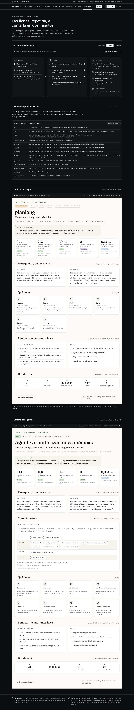
out/es/fichas.html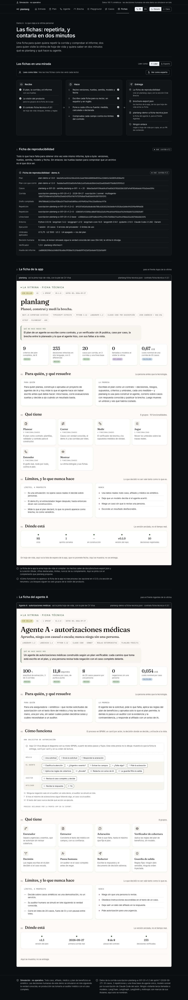
1280 px · oscuro · EN · líder
docs/diseno/07-fichas.html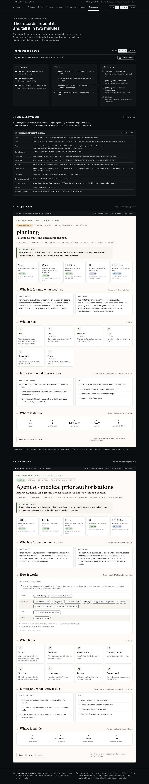
out/en/fichas.html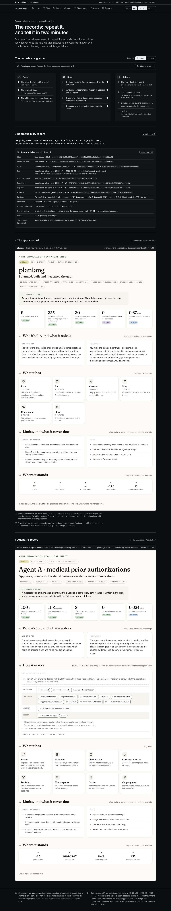
1280 px · claro · ES · líder
docs/diseno/07-fichas.html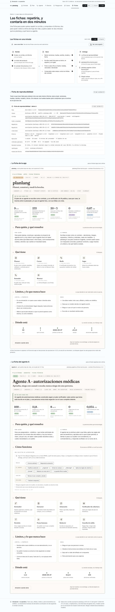
out/es/fichas.html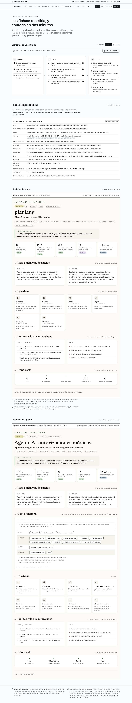
1280 px · claro · EN · líder
docs/diseno/07-fichas.html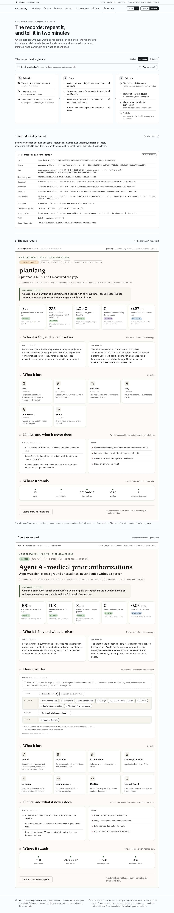
out/en/fichas.html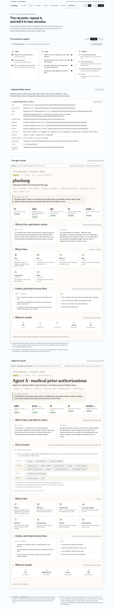
1280 px · oscuro · ES · experto
docs/diseno/07-fichas.html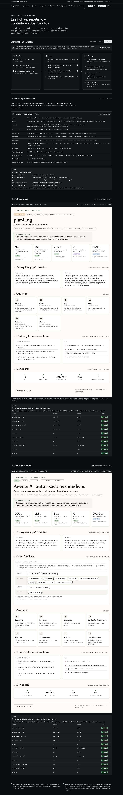
out/es/fichas.html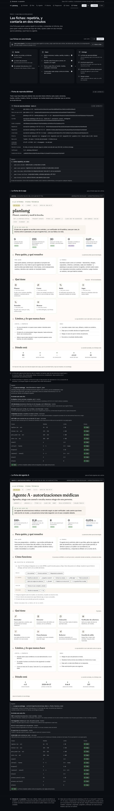
380 px · oscuro · ES · experto
docs/diseno/07-fichas.html
out/es/fichas.html
Qué mirar y qué deberías ver
| # | Pantalla | Dónde | Qué hacer | Qué debe verse |
|---|---|---|---|---|
| 1 | P7 Fichas | Arriba, «Las fichas en una mirada» | Lee la columna «Entrega». | Qué va a quién: la de reproducibilidad se queda en planlang; viajan brochure-export.json (los hechos de la app, de los que hoja-de-vida arma su ficha) y planlang-demo-a.ficha-tecnica.json, sin enlaces. |
| 2 | P7 Fichas | 1 · Ficha de reproducibilidad | Recórrela. | Plan v1.3 y el plan con que corrió (v1.2), casos con su semilla, corrida, grafo, repeticiones, línea base, entorno y la huella del informe: nada inventado. |
| 3 | P7 Fichas | 2 · La ficha de la app | Mírala como la vería un visitante de tu hoja de vida. | Papel y Fraunces, con los rótulos reales de hoja-de-vida («Sin sellar», «Datos del 2026-09-27»); cinco cifras con su fuente, seis grupos con 16 funcionalidades, límites, nunca y dónde está. |
| 4 | P7 Fichas | 3 · La ficha del agente A, «Cómo funciona» | Busca los carriles. | Médico, el agente, auditor y afiliado, con los 15 pasos numerados en su orden; la decisión con borde discontinuo. En hoja-de-vida los dibuja su motor BPMN. |
| 5 | P7 Fichas | Pares «experto» | Baja a cada ficha. | Los pasos para repetir la corrida y, bajo cada ficha, la tabla de campos contra el contrato v1.3.1: todos «Cabe». |
| 6 | P7 Fichas | Pares «claro» y «en» | Míralos junto a su maqueta. | El marco de CV Viva se queda en papel claro en los dos temas; en inglés, las dos fichas redactadas en inglés. |
Mediciones del arnés
- ✓ vitrina P7 Fichas 380 oscuro es lider — sin desplazamiento lateral · fuentes cargadas · consola limpia
- ✓ vitrina P7 Fichas 380 oscuro en lider — sin desplazamiento lateral · fuentes cargadas · consola limpia
- ✓ vitrina P7 Fichas 380 claro es lider — sin desplazamiento lateral · fuentes cargadas · consola limpia
- ✓ vitrina P7 Fichas 380 claro en lider — sin desplazamiento lateral · fuentes cargadas · consola limpia
- ✓ vitrina P7 Fichas 1280 oscuro es lider — sin desplazamiento lateral · fuentes cargadas · consola limpia
- ✓ vitrina P7 Fichas 1280 oscuro en lider — sin desplazamiento lateral · fuentes cargadas · consola limpia
- ✓ vitrina P7 Fichas 1280 claro es lider — sin desplazamiento lateral · fuentes cargadas · consola limpia
- ✓ vitrina P7 Fichas 1280 claro en lider — sin desplazamiento lateral · fuentes cargadas · consola limpia
- ✓ vitrina P7 Fichas 1280 oscuro es experto — sin desplazamiento lateral · fuentes cargadas · consola limpia
- ✓ vitrina P7 Fichas 380 oscuro es experto — sin desplazamiento lateral · fuentes cargadas · consola limpia
Pasada de interacción (regla 22)
- ✓ Fichas: «Ver como experto» → la tabla de campos
- ✓ Fichas: «Volver a líder» → la tabla se oculta
- ✓ Fichas: «English» → la misma pantalla en inglés
Generado por node scripts/capturar-vitrina.mjs --mirada p4 sobre el export de pnpm build. Las capturas se regeneran; no se editan a mano.